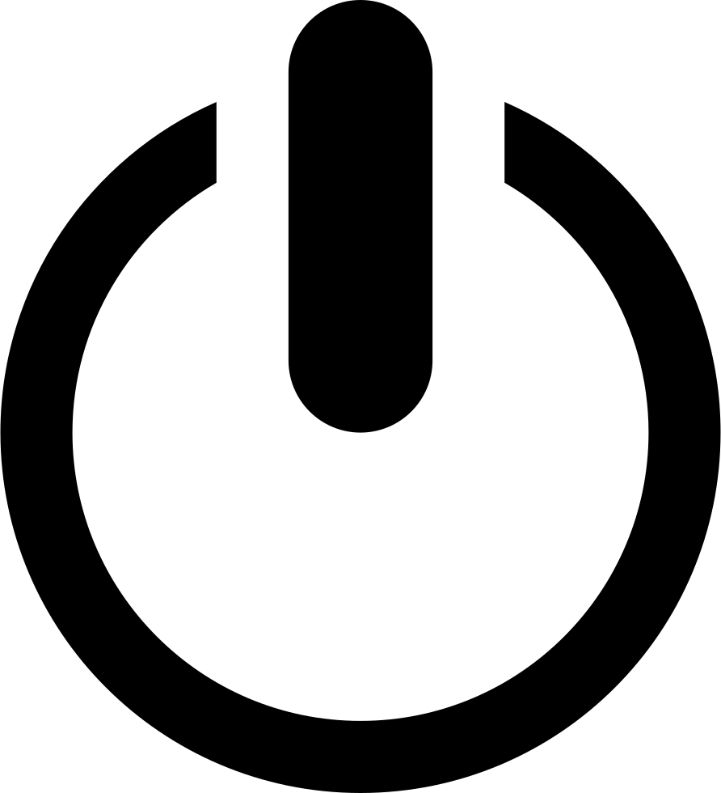

<div class="py-4 bg-transparent animated fadeIn">
    <div *ngIf="auth.loggedIn && auth.userProfile$ | async as profile" class="container text-center">
        
        <h1 class='my-3'><strong>¡Bienvenid@ {{ profile.name }}!</strong></h1>
        <div class="row">
            <div class="col-md-10 text-center pt-3">
                <h3>¡Ya estas list@ para usar Maps! podrás colocar, editar o eliminar marcadores que serán guardados de forma local en tu navegador. Para salir haga click en
                    <i class="material-icons">power_settings_new</i></h3>
            </div>
            <div class="col-md-2 text-center pt-3"></div>
        </div>

    </div>
</div>

<mat-card class="mb-3">
    <mat-card-title>Maps</mat-card-title>
    <mat-card-content>

        <agm-map (mapClick)='agregarMarcador( $event)' [latitude]="lat" [longitude]="lng" [zoom]="14">
            <agm-marker *ngFor="let marcador of marcadores; let i = index" [latitude]="marcador.lat" [longitude]="marcador.lng">

                <agm-info-window>

                    <strong>{{ marcador.titulo }}</strong>
                    <p>{{ marcador.descripcion }}</p>
                    <div>
                        <button mat-raised-button color="primary" (click)="editarMarcador(marcador)">Editar</button>
                        <button mat-raised-button color="warn" (click)="borrarMarcador(i)">Borrar</button>
                    </div>
                </agm-info-window>

            </agm-marker>
        </agm-map>

    </mat-card-content>
</mat-card>